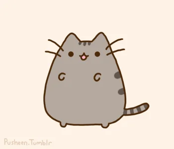
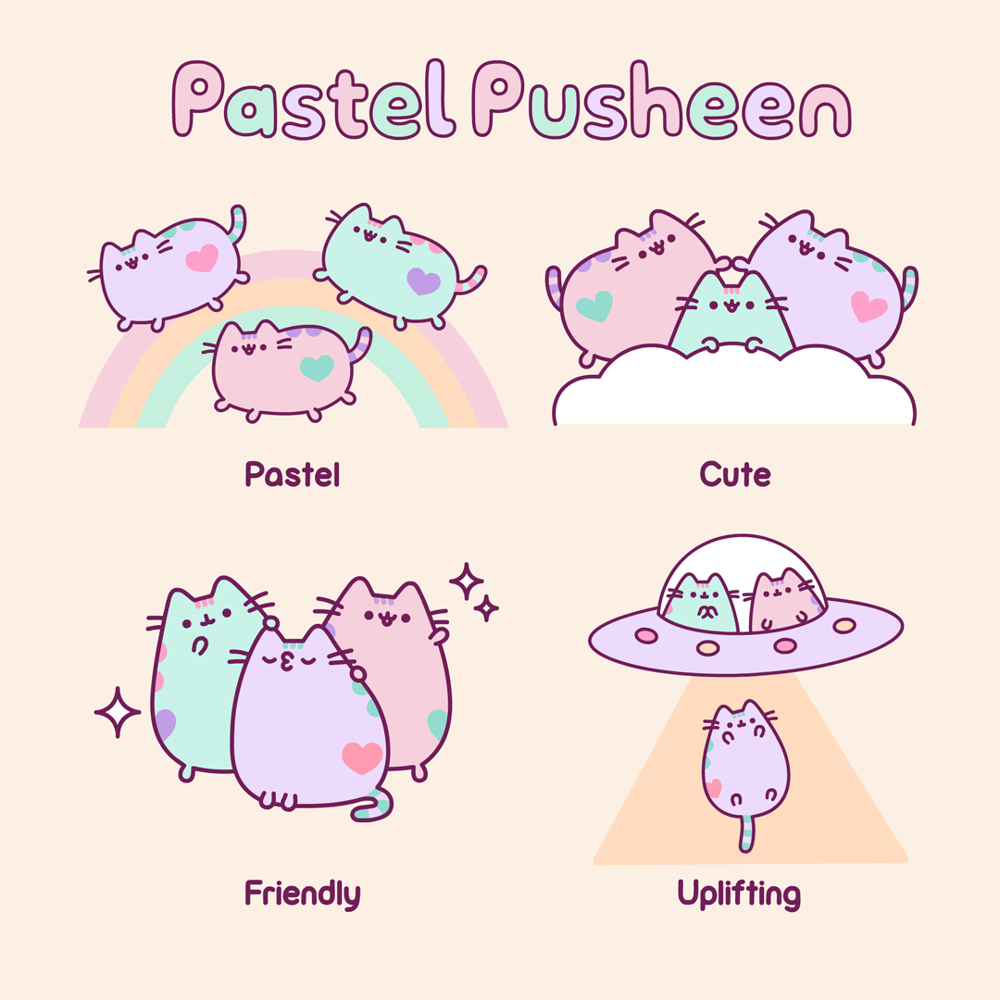
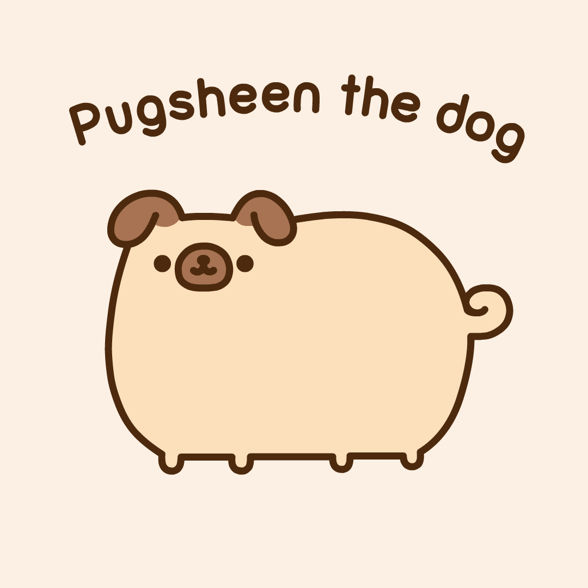
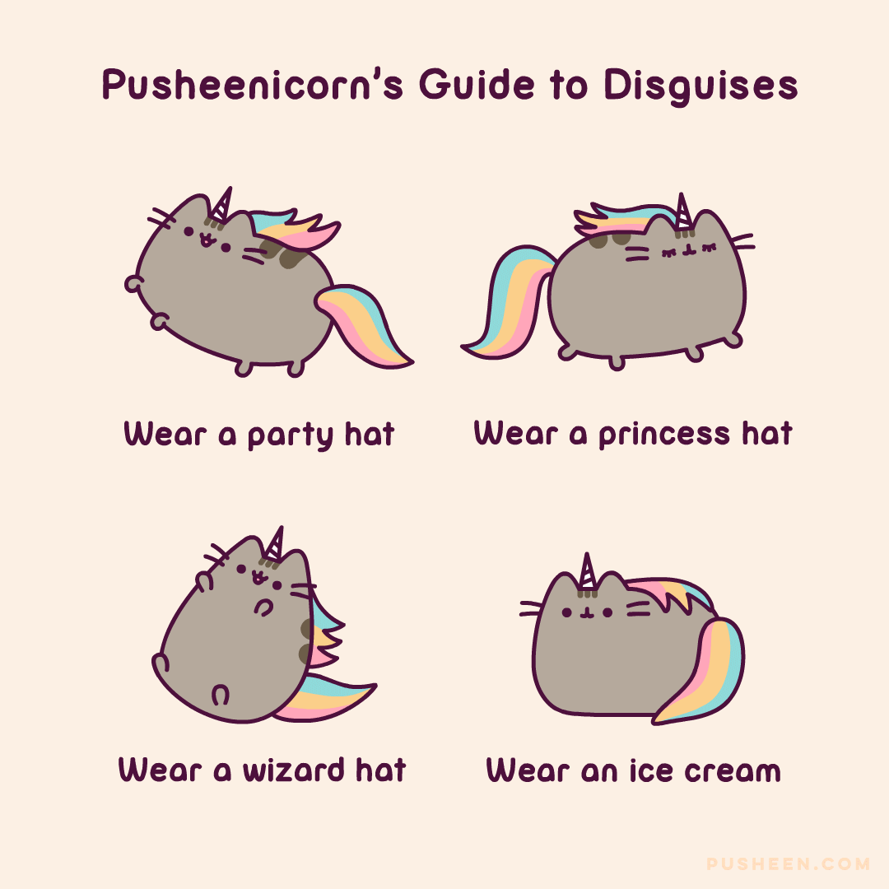
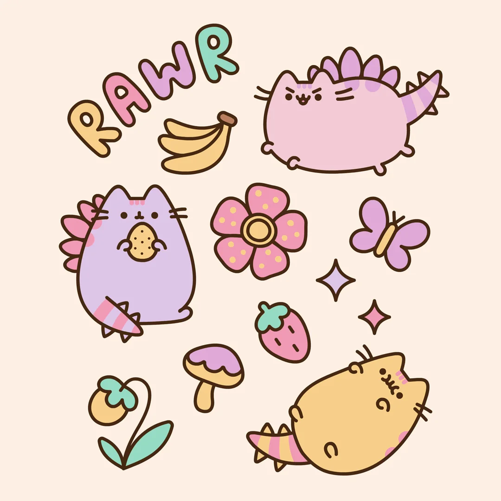
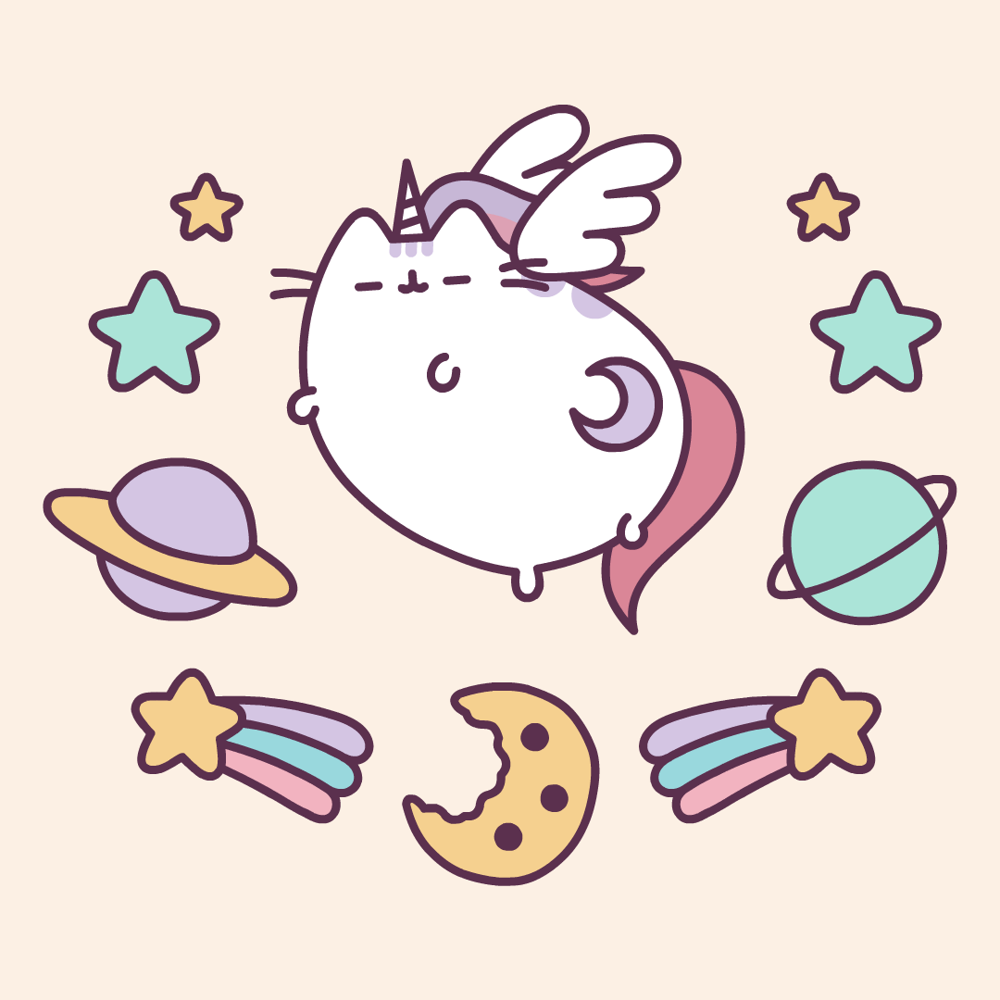
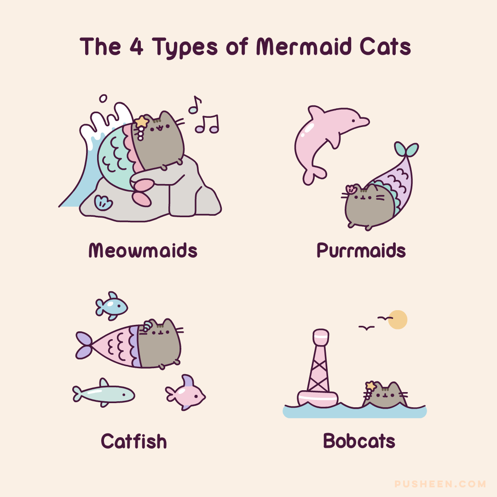
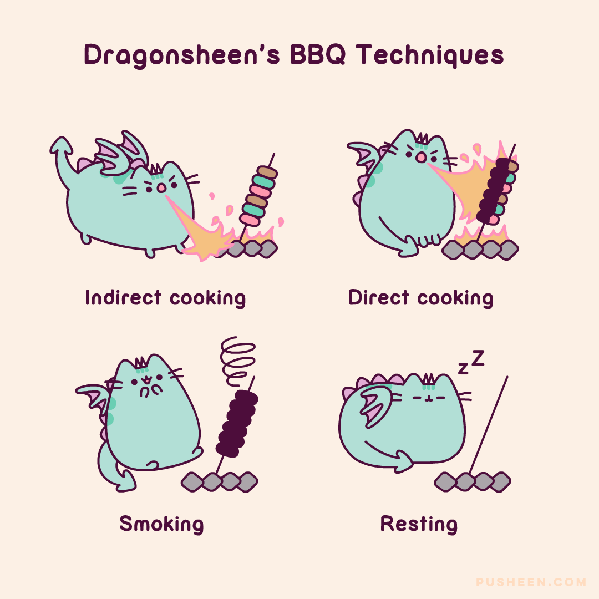
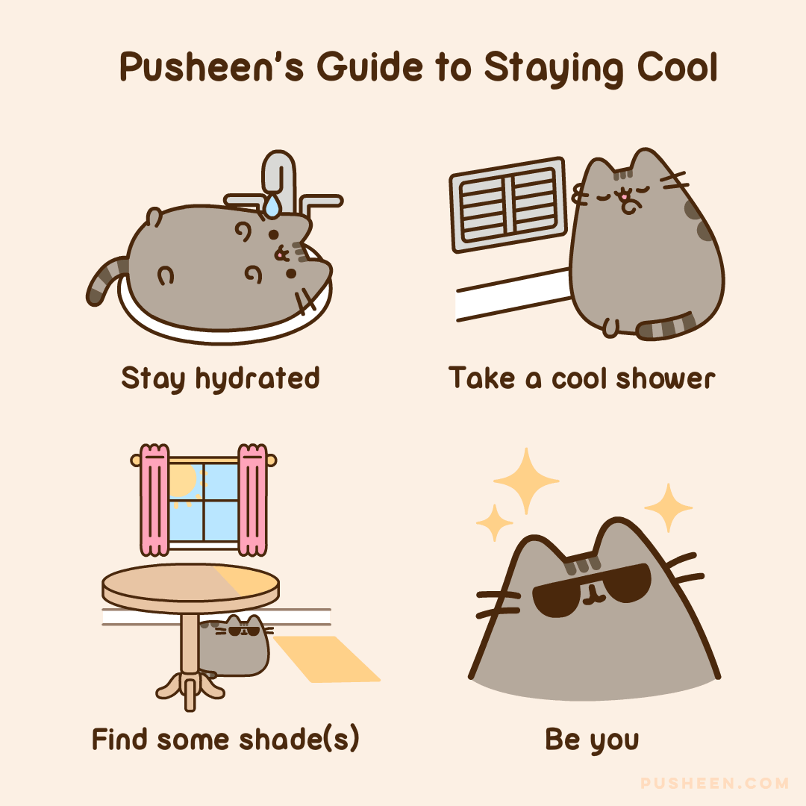

is a gray female tabby cat illustrated with simplicity by Claire Belton and Andrew Duff. Her first debut was in a short series comic titled Everyday Cute way back in 2010. She would then have her own spin off and form her own comic series that exploded in popularity. As a result of this massive increase of popularity, many new comics and GIFs are shared with friends and family.
Apart from the standard gray tabby cat that Pusheen is most often seen and used as, Pusheen has seven different variants that show from time to time. The first varient of the seven Pusheens are the three Pastel Pusheens. A space theme is most often seen with the Pastel Pusheens. The Pusheens themselves are colored in pastel colors and feature a heart colored in a pastel color of one of the other Pusheens.
Pugsheen is the second Pusheen. Pugsheen reimagines Pusheen as a dog instead of a tabby cat. Most depictions have Pugsheen doing dog related activities. Other depictions may have Pugsheen, Pusheen, and other characters doing some sort of activity.
Pusheenicorn and Super Pusheenicorn are the third and fith Pusheens. Pusheenicorn has a unicorn horn ontop of her head along with a rainbow colored mane. A unicorn can be often seen with Pusheenicorn along with some activity or showcase. Super Pusheenicorn is just like Pusheenicorn but the gray fur of Pusheenicorn is colored white, the tail is now a single shade of red, and the fur comes with a single crescent moon. Space is a common theme with Super Pusheenicorn.
If interested into the other Pusheens and more about Pusheen, please visit Pusheen.com for further details.
If interested in helping further development of this fan website, send an email







